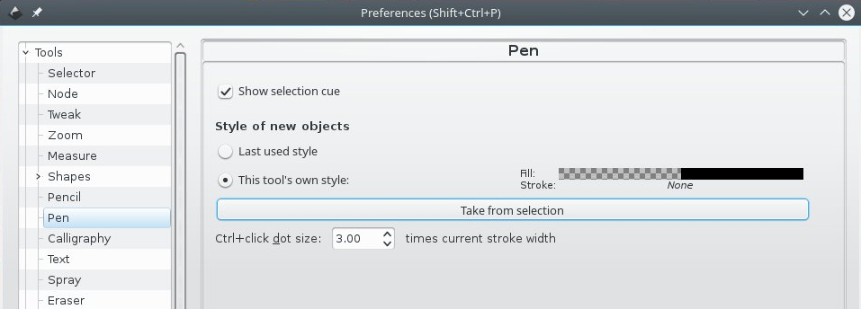
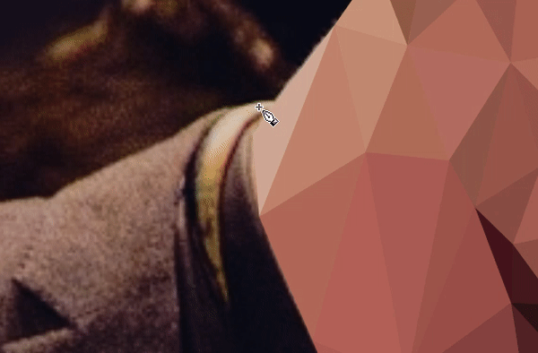
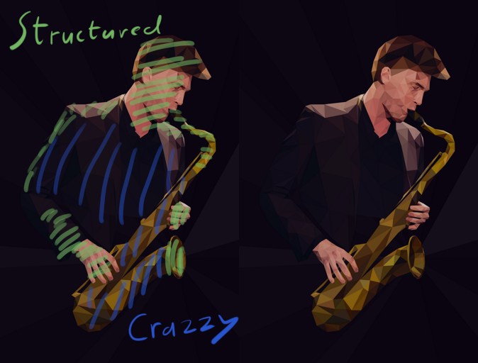
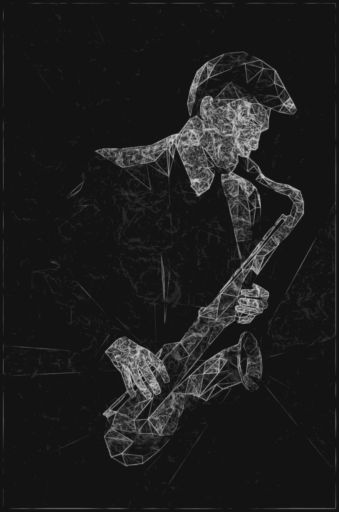

MixNode
A Digital Art Blog

My Tips For Low-Poly
Micah Denn — January 24, 2016

Interested in how I create the geometric triangley goodness in my lowpoly work? Here’s a few tips on how I get from idea to finish.
1. Get in the "Zone"
These are super fun and they aren’t that hard to do with a little practice but they might push your patience a tad. So get some good music on and be sure to have a supply of your favourite caffeinated beverage at hand.
2. Reference, reference, reference!
Our image is going to be heavily based off reference here so this first step is really, really important.>
At this stage its best to already have a pretty good idea of what your subject will be. Portraits are great but your not limited to that, this can look good with just about anything. Think about what your trying to express.
Then get on the internet!
Pixabay is my favourite place to start. It’s a neat collection of CC-0 images so we can use them anyway we like. They also have great donate buttons so its supper easy to give something back to the artists if you are thus inclined.
Our goal hear is to compose an image which we will use as a base to draw our polygons over.
I say compose because were not necessarily restricted to one image. You can build your reference off bits and bobs from as many different sources as you like. Then roughly stitch all the bits together in Krita or GIMP. It doesn’t have to be neat, you can even paint bits in if you like.
Try to find something with strong perspective and high contrast.
We need to find something with strong angles, depth. If we don’t have good depth it will be difficult to emphasise the 3D form and will end up just looking like a bunch of nicely coloured triangles.
The same applies to both colour and lighting. Try to get contrast across the subject. Use light and shadow to exaggerate the shapes.

3. Poly-oly-oly-olygons
Now fire up Inkscape and get to drawing all those triangles over your image.
- Make sure your reference is on a different layer to your paths.
- Enable Snapping.
- Set the default fill for the pen tool to 100% alpha.

Now with the pen tool you can draw your polygon then hit “D” to to switch to the colour picker.

Don’t Just go crazy drawing triangles everywhere like some kind of mad geometry obsessed supper villain.
You need to look closely at the shapes and contours that you’ll be dealing with and consider how to extract the underlying 3D form.
Consider carefully how much detail you want to include. More triangles does not equal a better result. The beauty comes from what you exclude more thank what you include.
Don’t be too focused on accuracy. Your only trying to create a loose description of the main shapes.
Try to keep an organic flow and avoid creating overly repetitive patterns.
If your not happy with a section don’t be afraid to keep deleting it and starting again. You’ll get it right eventually, it just takes time.
Go crazy drawing triangles everywhere like some kind of mad geometry obsessed supper villain
Wait didn’t he just tell us not to do that. *scrolls up* He did tell us not to do that!
There are key areas in every image where its important to get the form right like I just described. Points of focus. Outside of these areas however, you can start to get more free and abstract.
For example you might want to focus on representing the shapes of your subjects face but once you get down to their clothes you can start to bleed off into randomness and eventually just blend into the background.
How you balance careful construction with random abstractness is up to you, but there definitely should be a balance.
Hopeful after hours of triangleing you should now have your finished image.
Or...
You can keep going and push it even further.
But I think I’ve written enough already so I’ll leave that up to you.
Thanks for reading all this text that leaked out of my brain. If it was helpful to you then please do share it with others.
If you made a cool lowpoly then I’d love to see it, post her down below or ping @micah_denn
Also if you like the image above I have prints available here.

4. There is no step four

